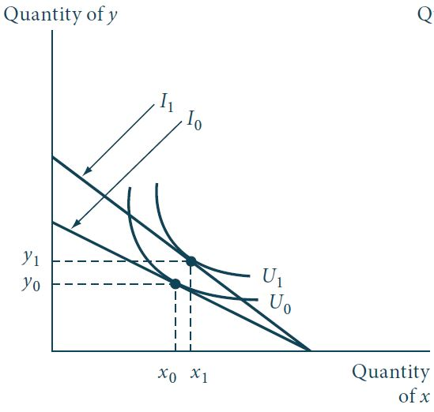
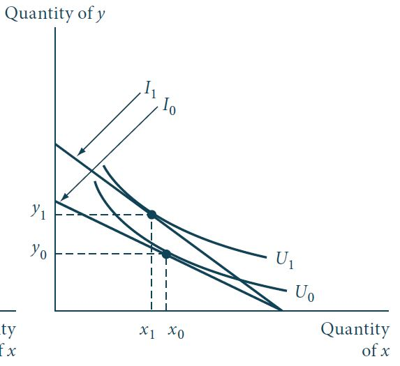

Relações de demanda entre bens
Introdução
Na seção anterior da disciplina estudamos como mudanças no preço de um determinado (e.g., bem \(x\)) afetam a quantidade demandada deste mesmo bem.
Ao longo da discussão, mantivemos o preço de todos os outros bens constantes.
No entanto, é evidente que variações nos preços de qualquer um destes outros bens pode afetar a quantidade demandada do bem \(x\).
Por exemplo, se \(x\) representa a quilometragem que um indivíduo dirige, espera-se que essa quantidade decline à medida que o preço da gasolina aumente.
Ou que aumente à medida que as tarifas aéreas e de ônibus aumentem.
Vamos, agora, usar o modelo de maximização de utilidade para estudar tais relações entre um bem e os preços dos outros bens.
O caso de dois bens
Introdução
Por simplicidade e possibilidade de uma representação gráfica, iniciaremos nossa análise de relações de demanda entre bens com o caso de dois bens.
Vamos considerar como a quantidade ótima escolhida do bem \(x\) é afetada por uma variação no preço do bem \(y\), \(p_y\).
Suponha que o preço \(p_y\) decline, isso resulta em uma rotação para fora da restrição orçamentária, de \(I_0\) para \(I_1\).
Introdução
Figura 1: Efeito-cruzado de variação nos preços: complementares brutos. Fonte: Nicholson, Snyder (2016).
Introdução
Como efeito de uma queda em \(p_y\), percebemos na Figura 1 um aumento na quantidade demandada do bem \(y\) (de \(y_0\) para \(y_1\)) - \(y\) é um bem normal.
O efeito sobre a quantidade demandada de \(x\), no entanto, pode variar.
Na Figura 1, as curvas de indiferença representadas praticamente assumem um formato em L e, portanto, o efeito substituição é pequeno.
Portanto, uma queda em \(p_y\) não induz em uma grande variação ao longo da curva de indiferença \(U_0\) à medida que \(y\) é substituído por \(x\).
Como resultado, a quantidade \(x\) cai relativamente pouco como resultado do efeito substituição.
Por outro lado, o efeito renda reflete um maior poder de compra agora disponível para o consumidor e isso faz com que a quantidade total de \(x\) escolhida aumente.
Introdução
Como o efeito renda domina o efeito substituição, neste caso, temos que \(\partial x/\partial p_y < 0\), ou seja, \(x\) e \(p_y\) movem em direções opostas.
Como \(\partial x/\partial p_y<0\), dizemos que \(x\) e \(y\) são complementares brutos.
Introdução
Figura 2: Efeito-cruzado de variação nos preços: substitutos brutos. Fonte: Nicholson, Snyder (2016).
Introdução
Na Figura 2, a situação é revertida. Agora \(\partial x/\partial p_y > 0\).
Como as curvas de indiferença agora são relativamente planas, isso resulta em um efeito substituição grande com a queda em \(p_y\).
A quantidade ótima escolhida de \(x\) decresce drasticamente à medida que \(y\) é substituído por \(x\) ao longo da curva de indiferença \(U_0\).
O efeito renda ainda indica um aumento no poder de compra do consumidor.
No entanto, agora o efeito substituição domina o efeito renda e, portanto, a quantidade demandada de \(x\) decresce para \(x_1\).
Neste caso, \(x\) e \(p_y\) movem na mesma direção - substitutos brutos.
Tratamento formal
A ambiguidade no efeito de variações em \(p_y\) sobre a quantidade demandada de \(x\) pode ser ilustrada, formalmente, utilizando-se uma variação da equação de Slutsky.
Usando procedimentos similares aos das aulas anteriores, temos: \[\begin{aligned} x^c(p_x,p_y,U) &=& x[p_x,p_y, E(p_x,p_y,U)] \nonumber \\ \frac{\partial x^c}{\partial p_y} &=& \frac{\partial x}{\partial p_y} + \frac{\partial x}{\partial E}\frac{\partial E}{\partial p_y} \nonumber \\ \frac{\partial x}{\partial p_y} &=& \frac{\partial x^c}{\partial p_y} - y\frac{\partial x}{\partial I}. \label{eq1} \\ \frac{\partial x}{\partial p_y} &=& \left.\frac{\partial x}{\partial p_y}\right|_{U=k} - y\frac{\partial x}{\partial I}. \\ \frac{\partial x}{\partial p_y} &=& \text{efeito substituição} + \text{efeito renda}. \nonumber \end{aligned} \qquad(1)\]
Equação de Slutsky
Podemos, ainda, escrever a Equação 1 em termos de elasticidades: \[\begin{aligned} % \frac{\partial x}{\partial p_y} &=& \frac{\partial x^c}{\partial p_y} - y\frac{\partial x}{\partial I} \nonumber \\ % \textcolor{blue}{\frac{p_y}{x}} \frac{\partial x}{\partial p_y} &=& \textcolor{blue}{\frac{p_y}{x}}\frac{\partial x^c}{\partial p_y} - y\frac{\partial x}{\partial I} \textcolor{blue}{\frac{p_y}{x}} \textcolor{red}{\frac{I}{I}} \nonumber \\ % \textcolor{blue}{\frac{p_y}{x}} \frac{\partial x}{\partial p_y} &=& \textcolor{green}{\frac{p_y}{x^c}}\frac{\partial x^c}{\partial p_y} - y\frac{\partial x}{\partial I} \textcolor{blue}{\frac{p_y}{x}} \textcolor{red}{\frac{I}{I}} \nonumber \\ e_{x,p_y} &=& e_{x^c,p_y} - s_y e_{x,I}. \end{aligned} \qquad(2)\]
Note que o tamanho do efeito renda é determinado pela proporção da renda despendida com o bem \(y\), \(s_y\).
O impacto de uma variação em \(p_y\) sobre o poder de compra do consumidor é determinado por quão importante este bem é para este indivíduo.
Equação de Slutsky
Para o caso de dois bens, os termos do lado direito das Equação 1 e Equação 2 possuem sinais algébricos distintos.
Assumindo que as curvas de indiferença sejam convexas, o efeito substituição é positivo - para movimentos apenas ao longo da curva de indiferença, aumentos (quedas) em \(p_y\) aumentam (diminuem) a quantidade ótima de \(x\).
Com relação ao efeito renda, no entanto, se \(x\) é um bem normal, o efeito renda é claramente negativo.
Portanto, o efeito total é ambíguo, \(\partial x/\partial p_y\) pode tanto ser positivo quanto negativo.
Mesmo no caso de dois bens, a relação de demanda entre a demanda de \(x\) e o preço \(p_y\) é complexa.
Exercício
Suponha um consumidor cujas relações de preferência sejam descritas pela seguinte função utilidade: \[U(x,y) = x^{0,5}y^{0,5}.\] Veja qual o efeito-preço cruzado de uma variação em \(p_y\) sobre a quantidade demandada do bem \(x\), e mostre que a razão pela qual variações em \(p_y\) não impactam a quantidade ótima de \(x\) no caso Cobb-Douglas é que os efeitos renda e substituição se cancelam.
Bens substitutos e complementares
Bens substitutos e complementares
Para o caso de vários bens, há mais espaço para relações interessantes entre os bens.
Neste caso, podemos generalizar a equação de Slutsky para quaisquer bens \(x_i\) e \(x_j\) como (derive esta expressão como exercício): \[\frac{\partial x_i(p_1, \dots, p_n, I)}{\partial p_j} = \left.\frac{\partial x_i}{\partial p_j}\right|_{U=k} - x_j\frac{\partial x_i}{\partial I}. \qquad(3)\]
Em termos de elasticidade, temos (derive como exercício): \[e_{i,j} = e_{i,j}^c - s_j e_{i,I}. \label{eq5}\]
Bens substitutos e complementares
As Equação 3 e ?@eq-eq5 nos dizem que variações no preço de um bem \(j\) qualquer induz efeitos renda e substituição que podem alterar a quantidade demandada de qualquer outro bem.
Dois bens são ditos substitutos se um bem, como resultado de variações em condições, substituem um outro bem em uso. Exemplo: chá e café, hamburger e cachorro-quente, manteiga e margarina.
Dois bens são ditos complementares se “vão juntos” no consumo. Exemplo: café e leite, whisky e charuto, refrigerante e hamburger.
Bens “substitutos” substituem um pelo outro na função utilidade, enquanto “complementares” se complementam.
Existe duas maneiras distintas de fazer essas ideias intuitivas mais precisas. Uma delas foca no efeito “bruto” de variações dos preços ao incluir tanto o efeito renda quanto o efeito substituição. A outra foca apenas no efeito substituição.
Substitutos e complementares brutos (Marshallianos)
Substitutos e complementares brutos
Dois bens \(x_i\) e \(x_j\) são substitutos brutos se: \[\frac{\partial x_i}{\partial p_j} > 0. \qquad(4)\]
Dois bens \(x_i\) e \(x_j\) são complementares brutos se: \[\frac{\partial x_i}{\partial p_j} < 0. \qquad(5)\]
Assimetria das definições brutas
Exemplo Suponha que um consumidor tenha suas relações de preferência descritas pela seguinte função utilidade: \[U(x,y) = \ln x + y.\]
Determine se os bens \(x\) e \(y\) são substitutos ou complementares brutos.
Assimetria das definições brutas
Como a definição de complementares e substitutos brutos incorporam tanto o efeito renda quanto o substituição, essa é a definição que observamos no “mundo real”.
No entanto, existem algumas propriedades indesejáveis nestas definições brutas de complementares e substitutos.
A principal delas é que estas definições, como mostrado no exercício anterior, não são simétricas.
Pelas definições, é possível que \(x_1\) seja um substituto bruto para \(x_2\) e, ao mesmo tempo, \(x_2\) seja um complementar bruto para \(x_1\).
Portanto, a presença dos efeitos renda pode causar resultados paradoxais.
Substitutos e complementares líquidos (Hicksianos)
Substitutos e complementares líquidos
Os bens \(x_i\) e \(x_j\) são ditos substitutos líquidos se: \[\left.\frac{\partial x_i}{\partial p_j}\right|_{U=k} > 0. \qquad(6)\]
Os bens \(x_i\) e \(x_j\) são ditos complementares líquidos se: \[\left.\frac{\partial x_i}{\partial p_j}\right|_{U=k} < 0. \qquad(7)\]
Substitutos e complementares líquidos (Hicksianos)
Estas definições olham apenas para os termos de efeito substituição para determinar se dois bens são substitutos ou complementares.
Esta definição tem um apelo intuitivo (pois olha apenas para o formato das curvas de indiferença) e um apelo teórico (pois não permite ambiguidades).
Uma vez que determinamos que \(x_i\) e \(x_j\) são substitutos (complementares) líquidos, eles permanecem substitutos (complementares), não importa em qual direção a definição é aplicada: \[\left.\frac{\partial x_i}{\partial p_j}\right|_{U=k} = \left.\frac{\partial x_j}{\partial p_i}\right|_{U=k}.\]
O efeito substituição de uma mudança em \(p_i\) sobre \(x_j\) é idêntico ao efeito substituição de uma mudança em \(p_j\) sobre \(x_i\).
Substitutos e complementares líquidos (Hicksianos)
A diferença entre as definições Marshallianas e Hicksianas para bens substitutos e complementares pode ser percebida nas Figura 1 e Figura 2.
Nas figuras, os dois bens são sempre substitutos líquidos. Dada a convexidade das curvas de indiferença, uma queda em \(p_y\) sempre faz com que a quantidade demandada de \(x\) seja menor para manter o nível de utilidade constante, \(\partial x^c/\partial p_y > 0\).
Já pela definição Marshalliana, temos ambiguidade pois envolve, também, o efeito renda (que é sempre negativo, assumindo que os dois bens sejam normais).
Na Figura 1, o efeito renda negativo domina o efeito substituição positivo e, portanto, \(\partial x/\partial p_y<0\) e os bens são denominados “complementares Marshallianos”.
Já na Figura 2, o efeito substituição positivo domina o efeito renda negativo, \(\partial x/\partial p_y>0\) - “substitutos Marshallianos”.
Com \(n\) bens padrões ainda mais complexos são possíveis, no entanto, a definição Hicksiana simplifica a análise ao eliminar as ambiguidades.
Substituibilidade com vários bens
Substituibilidade com vários bens
Quando consideramos o caso de \(n\) bens, vários padrões de demanda podem emergir.
Se um determinado par de bens é substituto líquido ou complementar líquido é uma questão relacionada às preferências de um indivíduo. Portanto, podemos observar todos os tipos de relações de demanda.
Uma questão importante é determinar se substituibilidade ou complementariedade é mais prevalente.
Intuitivamente, tendemos a pensar nos bens como substitutos - um aumento de preços em um mercado específico tende a aumentar a demanda na maioria dos outros mercados.
Substituibilidade com vários bens
O economista britânico John Hicks chegou à conclusão que a “maioria” dos bens são substitutos.
Este resultado é resumido no que ficou conhecido como segunda lei da demanda de Hicks.
Para mostrar este resultado, tomamos a função de demanda compensada para um bem particular \(x_i^c(p_1, \dots, p_n, V)\) que, como vimos, é homogênea de grau zero nos preços. Portanto, pelo teorema de Euler, temos: \[p_1 \frac{\partial x_i^c}{\partial p_1} + p_2 \frac{\partial x_i^c}{\partial p_2} + \dots + p_n \frac{\partial x_i^c}{\partial p_n} = 0. \qquad(8)\]
Substituibilidade com vários bens
A Equação 8 pode ser escrita em termos de elasticidades: \[e_{i1}^c + e_{i2}^c + \dots + e_{in}^c = 0. \qquad(9)\]
Mas sabemos que \(e_{ii}^c \leq 0\) devido à negatividade do efeito substituição com relação ao próprio bem - primeira lei da demanda de Hicks.1
Portanto, deve ser o caso que: \[\sum_{j\neq i}e_{ij}^c \geq 0. \qquad(10)\]
Ou seja, a soma de todas as elasticidades-preço cruzadas da demanda compensada para um bem particular deve ser não-negativa.
Isso nos diz que a “maioria” dos bens são substitutos - a evidência empírica é, em termos gerais, compatível com este resultado teórico.
üìö Bibliografia
NICHOLSON, W.; SNYDER C. Microeconomic theory: Basic principles and extensions. 12th ed. Boston, USA: Cengage Learning, 2016.
NICHOLSON, W.; SNYDER C. Teoria microeconômica: Princípios básicos e aplicações. Cengage Learning Brasil, 2019. Disponível em: app.minhabiblioteca.com.br/books/9788522127030
VARIAN, H. R. Microeconomia: uma abordagem moderna. 9.ed. Rio de Janeiro: Elsevier, 2015. Disponível em: app.minhabiblioteca.com.br/books/9788595155107